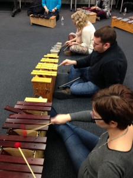

The opposite of “play” is not “work” … it’s depression.
{kind=link}
A friend recently sent me this quote because, as anyone who knows me knows, I am always playing, talking about the importance of play and encouraging others to play. I bring it up in meetings, it’s built into my agendas for PD, play is always modelled in my work in the classroom and I spend time reading scholarly articles on play (yes, scholars write about playing!*). It is not uncommon for me to be caught dancing while waiting for my photocopying to be finished. I doodle, fold, tape, tear paper at meetings. I question how things are done and ask silly things. Sometimes I ask inappropriate things. People might laugh – and I notice when laughter enters the room that the mood changes, people sit differently in their chairs, they even begin to breathe differently. I really appreciate working in an environment where I can be free to operate in this way, and in a school division that values play, imagination, curiosity, problem solving and inquiry.
{kind=link}
{kind=link}
Arts & Learning teacher leaders are developing examples of Inquiry in the Arts units to be published and shared online. Inquiry is being done into: how artists think and create; how manipulation leads to problem solving through building/constructing; why traditions influence our contemporary world; and how light and dark create meaning through shadows. These are deep explorations for young people but our goal is to develop a process that builds curiosity and confidence to find the solutions as they play with ideas and materials.
As teachers, we are also playing with ideas and asking lots of questions as we work in our collaborative space:
Does the inquiry process look different in the Arts than it does in ELA or Social Studies? (Should it?)
What constitutes research?
Do we value play as research?
Does it change your perception if you substitute “experiment” for “play”?
Hmmm, what does this indicate about our perceptions of the word play and if we can take it seriously? Can play be work? Can you work hard at playing? Is this only allowed/accepted in Early Years education?
{kind=link}
Improvisation and Learning by Playing
Recently, Jackie Kroczynski (NBCHS teacher and band leader) led a workshop for teachers on Orff and Jazz improvisation that had us singing, clapping, dancing and playing instruments. Those of us who cannot read music were able to create music that sounded quite beautiful – this was empowering for me and built my musical confidence greatly. Did I struggle and work at it? You bet! But I was playing and experimenting with sound, listening to others and layering in melody and rhythm. It was a wonderful example of inquiry based learning as we were given tools and allowed to problem solve, research, be curious and figure it out by doing. We were encouraged to use one another as shared experts in the room. As I reflected on the process I realized I was self regulating throughout, doing self talk, deep listening and improving by trial and error. I made lots of mistakes! And that was just fine. The experience left me wanting to know more, keep trying, delve deeper and to try again. Seems like a fine approach to learning for me.
{kind=link}
ORFF workshop ( Short video of teachers at work, I mean play.)
* Articles on the Importance of Playing:
Tinkering is Serious Play, ASCD, Jan 2015
Why is Play Important?, J.P. Isenberg| M. R. Jalongo, 2014
Play in Education: the Role and Importance of Creative Education, The Guardian 2013
Research Papers: Importance of Play, Waldorf Research Educators Network